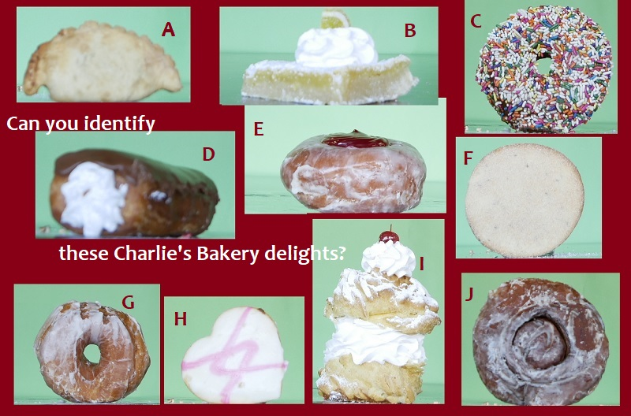

NewMexicoVegas.com
The NEW MEXICO Vegas!
The first and original Las Vegas...NEW MEXICO!

|
Many visitors say our Las Vegas is the friendliest town they've ever seen.
These videos might prove the point.
Good overview of Las Vegas NM & history
NEW!
After watching that video...


AMAZON COME TO VEGAS! (hundreds of posts via Associated Press)
Proposed Las Vegas NM series
The Fourth of July Fiesta Run - 2017 edition
LOCAL ANIMALS
A LITTLE SPOT OF EXTREME WEATHER
"MELANIA COME TO MAMA'S PLACE"
Another fast-climbing video (on Facebook) shows the popularity
of Las Vegas' incredible array of historic homes. Tours here**
Also on Facebook here: https://www.facebook.com/jim.terr/videos/vb.1067727381/10209200459103044/?type=2&theater

Latest in a series shot at the Plaza Hotel
(and hopefully to be produced here!)
(this particular one IS being produced and completed here!)
on Facebook here
From our 4th of July weekend FIESTA RUN!!
Video also on Facebook here - 800+ views first day!
And a little something posted last week that has gotten
over 1600 views in first few days.. Like to think these
random videos promote what's good about LVNM!
Something nice & local.. over 4,000 views on Facebook first few days

Thanks to sponsors and supporters
in promoting Las Vegas, NM
Franken Companies
....did beauttiful, award-winning total renovation of old Trolly Building for Highlands University:

right-click here to see video by Mykle WIlliams.
Vince and Vicki Howell - in support of creativity
Sue Strebe Real Estate
** Southwest Detours (Tours)

Great article / interview about Kathy's Tour work by:
Sharon Vander Meer - One Roof Publishing
The Corridor (North central NM news & views)
In honor of El Zocalo Cooperative Gallery
and the work of Chris Lopez:

(To see full-size directly on YouTube, click on video title)
Plaza Drugs
BTU Doit Center - Mills Blvd - Las Vegas, NM

Citizens' Committee for Historic Preservation PWAP Tour August 6 -
(see film tour info below)
Meadow City Music Festival - Sept 29-Oct 2
Associated websites and pages (some "under construction")
VegasNMfilm.com / LasVegasNewMexicoFilm.com
Nice drone video by Mykle Williams, of nearby canyon

Las Vegas, NM, already the movie capital of the southwest;
working on becoming the recording capital too!
Expecting many more views on Facebook post of this video
Not officially affiliated with the City, Chamber of Commerce, etc.